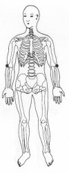
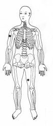

Trava de Segurança da Energia 19 - Terceira Profundidade.
|
 |
TSE 19
Coloque a mão na dobra externa do cotovelo do lado do polegar TSE 19. ou
M.e. sobre o braço direito parte superior TSE 19 alta;
M.d. na coxa esquerda parte interna TSE 1 alta . |
 |
Notas:1 - M.d. = mão direita M.e. = mão esquerda.
2 - O texto sublinhado indica que pode ser feito usando alternadamente o lado
direito (mão direita) e depois o lado esquerdo (mão esquerda).
3 - Tocar a área indicada, com a ponta dos dedos da mão, durante
alguns minutos ou até sentir uma pulsação rítmica.
Não precisamos nos preocupar em demasia com a precisão da área
indicada, pois cada trava de segurança da energia tem uma abragência
de uns sete centímetros em torno de si.